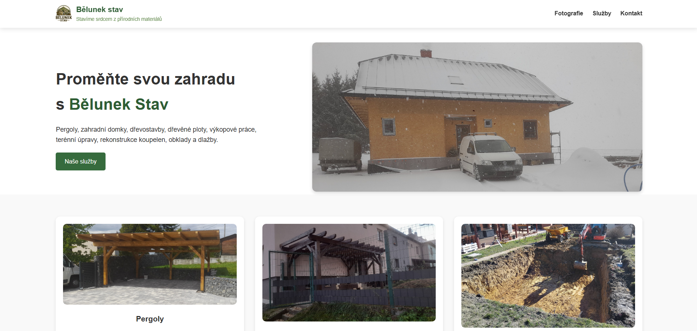
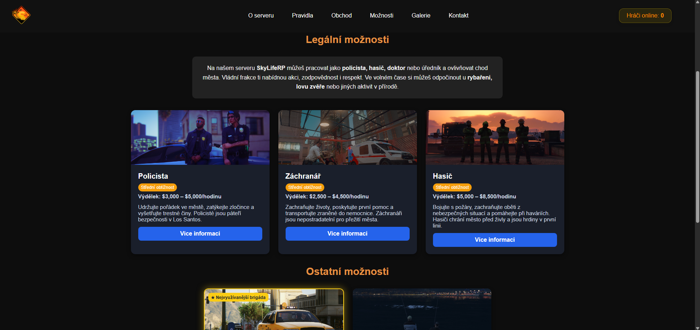
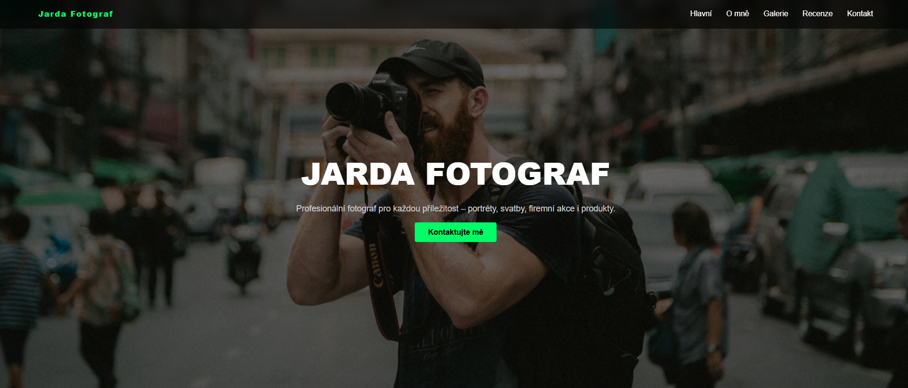

Navrhuji rychlé, responzivní a moderní webové stránky, které nejen dobře vypadají, ale pomáhají získávat nové klienty.
Vytvořených webů
Responzivní design
Průměrná odpověď
Roky zkušeností
Baví mě spojovat design, kód a praktičnost. Každý web tvořím tak, aby byl přehledný, rychlý, responzivní a aby návštěvník hned pochopil, co nabízíte a proč vám má věřit.
Zaměřuji se na moderní prezentační weby, osobní portfolia, redesign starších stránek a menší webové projekty pro podnikatele, značky nebo jednotlivce.
Web developer & designer
Od jednoduché landing page až po moderní prezentační web pro značku nebo firmu.
Moderní prezentační web podle vašich potřeb, značky a cílové skupiny.
Vylepšení starého webu tak, aby působil moderně, rychle a důvěryhodně.
Úpravy, aktualizace, drobné opravy a technická pomoc po spuštění.
Ukázky webů a konceptů, na kterých jsem pracoval.

Firemní web 2026
Herní web 2026
Portfolio 2026Jednoduchý postup od první zprávy až po spuštění hotového webu.
Probereme vaše požadavky, cíle a představu o webu.
Připravím strukturu, směr designu a obsah webu.
Naprogramuji rychlý a responzivní web.
Web připravím k ostrému provozu a doladím detaily.
Pomůžu i po dokončení s úpravami nebo správou.
„Jiří vytvořil přesně to, co jsem potřeboval. Komunikace byla rychlá a výsledek působí profesionálně.“
— Petr Novák„Web je přehledný, rychlý a dobře vypadá i na mobilu. Oceňuji hlavně ochotu a rychlé úpravy.“
— Martin K.Cena záleží na rozsahu projektu. Menší web může být levnější, větší web s více sekcemi bude dražší.
Jednodušší web může být hotový během pár dní. Větší projekt obvykle zabere více času podle požadavků.
Ano. Můžu pomoct s úpravami, opravami, správou webu nebo dalším rozvojem.
Ano. Starý web můžu upravit tak, aby působil moderněji, rychleji a důvěryhodněji.
Pojďme ho společně proměnit ve skutečnost.
Pojďme společně vytvořit váš web →